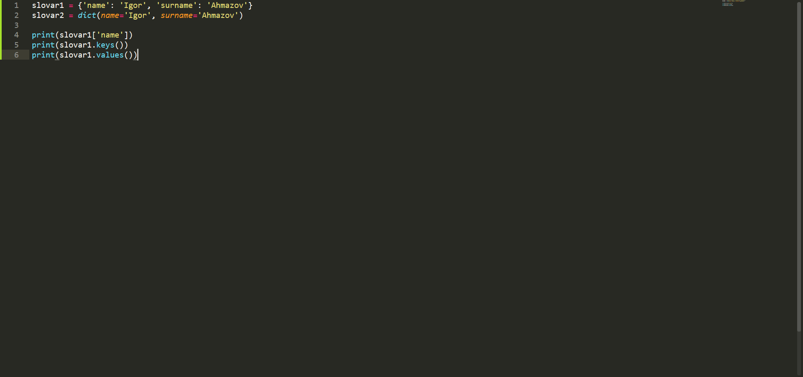

Словари — непорядковая структура данных, которая позволяет хранить пары «ключ — значение». Cловари могут создаваться двумя способами: литералами или через метод dict(). Выглядят оба варианта словаря так:
Также вы можете увидеть различные методы для работы со словарём.
Метод keys() - возвращает нам коллекцию ключей.
Метод values() - возвращает коллекцию значений.
Метод ['name'] - возвращает нам значение одного любого ключа.
А если нам нужно создать ещё один ключ со значением в словаре. Как быть? Не беспокойтесь, нам поможет метод setdefault(). Он добавляет в словарь ещё одну пару «ключ — значение». В скобках указывается сначала имя ключа, затем его значение.
Сегодня мы поработали со словарями.